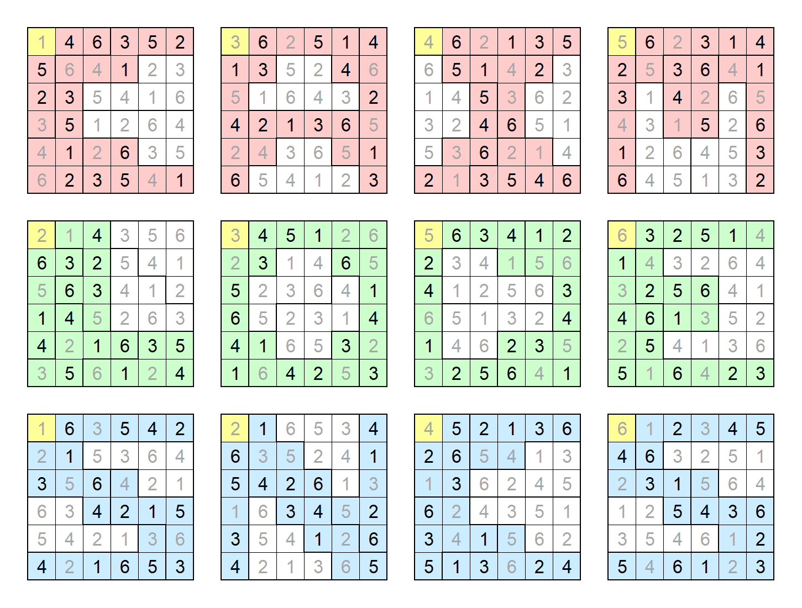

Solution: Missing Pieces
Answer: BLANKS
Written by Yannick Yao
The puzzle contains three pages of 16 hexominoes each, and each hexomino contains 4 distinct numbers between 1~6 inclusive and two empty spaces. The title “Missing Pieces” and the puzzle layout remind us of both jigsaw puzzles and jigsaw sudokus, and the 6 by 6 grids in the bottom of the puzzle confirm this intuition. So the first step is to try arranging the pieces into 6 by 6 jigsaw sudokus that are solvable. This is doable, up to a certain point: no complete 6 by 6 grids can be assembled!
Here is when the first usage of “Missing Pieces” comes in: each jigsaw sudoku is actually incomplete, and only 4 out of 6 pieces are provided (this is somewhat hinted by the number of pieces for each color, and each piece only contains 4 out of the 6 numbers). In this light we are able to assemble partial grids, preserving all orientations and keeping the yellow square on the top left corner of the 6 by 6 grid.
With all the pieces assembled, we are able to solve the entire sudoku with the 16 given numbers in each puzzle, including the numbers on the missing pieces. (The knowledge of the shapes of the missing pieces is not necessary: in some grids the shapes are not unique.) The assembled and solved grids are shown below:
Each group of 4 pieces contains exactly one yellow square, and spells a letter: red pieces spell C, A, I, M, green pieces spell L, O, D, E, and blue pieces spell S, N, C, S. Noticing that the yellow numbers are distinct in each group of 4 grids of the same color, we may interpret them as positions in a six-letter word: C_AIM_, _LO_DE, SN_C_S. We thus try to supply the “Missing Pieces” once more to get CLAIMS, BLONDE, SNACKS (it’s possible to get SNICKS, but SNACKS is much more common as a word). The six letters we filled in are in different positions, so we order them by their positions in the words to get BLANKS as our final answer.
Author’s Notes
When I first saw jigsaw sudoku (back in elementary school), the first thing that came to mind was “what if I have to actually assemble the pieces like a jigsaw puzzle?” Given how natural this idea was, I was somewhat surprised that there have been no puzzles (that I know of) that use this concept, which further motivated me to write this puzzle.
There were many constraints in the construction of this puzzle: since each sudoku must have exactly two missing pieces, letters such as K and Y are automatically unusable. Moreover, cluing a unique six-letter word with four letters given turned out to be surprisingly tricky, which did not leave many combinations of words to use. I am happy that I eventually managed to find a set of three common enough words that use a good variety of letters (a previous draft of this puzzle used the word ALASKA). The SNACKS/SNICKS issue was noticed during fact-checking, which is unfortunate but somewhat unavoidable given how constrained the pool of words is.
On the other hand, the construction of sudoku puzzles was significantly less difficult. 16 clues in a 6 by 6 jigsaw sudoku is usually way more than enough, even when assembly was required, which allowed me to essentially choose which number to clue at random. The only unfortunate situation is that the yellow square on the top left is necessary as an implicit condition in assembly, since otherwise in many sudokus one can simply place a 1 by 6 hexomino on the top/bottom or left/right no matter how the clues are given.